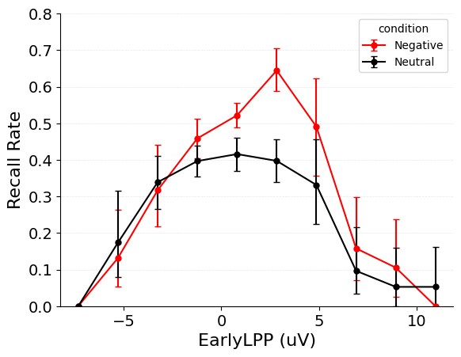

/Users/jordangunn/jaxcmr/.venv/lib/python3.12/site-packages/scipy/stats/_resampling.py:147: RuntimeWarning: invalid value encountered in divide
a_hat = 1/6 * sum(nums) / sum(dens)**(3/2)
/Users/jordangunn/jaxcmr/.venv/lib/python3.12/site-packages/scipy/_lib/_util.py:440: DegenerateDataWarning: The BCa confidence interval cannot be calculated. This problem is known to occur when the distribution is degenerate or the statistic is np.min.
return fun(*args, **kwargs)
/Users/jordangunn/jaxcmr/.venv/lib/python3.12/site-packages/scipy/stats/_resampling.py:147: RuntimeWarning: invalid value encountered in divide
a_hat = 1/6 * sum(nums) / sum(dens)**(3/2)
/Users/jordangunn/jaxcmr/.venv/lib/python3.12/site-packages/scipy/_lib/_util.py:440: DegenerateDataWarning: The BCa confidence interval cannot be calculated. This problem is known to occur when the distribution is degenerate or the statistic is np.min.
return fun(*args, **kwargs)

Code
"""Category-filtered LPP-binned recall analyses."""from __future__ import annotationsfrom typing import Optional, Sequenceimport jax.numpy as jnpfrom jax import jit, vmapfrom jax.nn import one_hotfrom matplotlib import rcParams # type: ignorefrom matplotlib.axes import Axesfrom jaxcmr.helpers import apply_by_subjectfrom jaxcmr.plotting import init_plot, plot_data, set_plot_labelsfrom jaxcmr.typing import Array, Bool, Float, Integer, RecallDatasetdef category_recall_counts( recalls: Integer[Array, " recall_events"], categories: Integer[Array, " study_positions"], category_value: int, list_length: int,) -> Float[Array, " study_positions"]:"""Returns recall counts per position restricted to a category.""" position_counts = jnp.bincount(recalls, length=list_length +1)[1:]return position_counts * (categories == category_value)def category_lpp_recall_histogram( recalls: Integer[Array, " trial_count recall_positions"], lpp: Float[Array, " trial_count study_positions"], categories: Integer[Array, " trial_count study_positions"], category_value: int, bin_edges: Float[Array, " bin_count_plus_one"], list_length: int,) -> Float[Array, " bin_count"]:"""Returns category-filtered recall rate as a function of LPP bins. Args: recalls: Trial by recall position array of recalled items. 1-indexed; 0 for no recall. lpp: Trial by study position array of LPP values. categories: Trial by study position array of item categories. category_value: Category value to compute recall rates over. bin_edges: LPP bin edges used for aggregation. list_length: Length of the study list. """ thresholds = bin_edges[1:-1] num_bins = bin_edges.shape[0] -1 bin_indices = jnp.digitize(lpp, thresholds) bin_one_hot = one_hot(bin_indices, num_bins, dtype=lpp.dtype) matches = (categories == category_value).astype(lpp.dtype) recall_counts = vmap( category_recall_counts, in_axes=(0, 0, None, None), )(recalls, categories, category_value, list_length) exposure_counts = (matches[..., None] * bin_one_hot).sum(axis=(0, 1)) recall_bin_counts = (recall_counts[..., None] * bin_one_hot).sum(axis=(0, 1)) exposure_counts = exposure_counts.astype(lpp.dtype)return exposure_counts# return jnp.where(exposure_counts > 0, recall_bin_counts / exposure_counts, 0.0)def cat_lpp_spc( dataset: RecallDataset, category_field: str, category_value: int, lpp_field: str="LateLPP", bin_edges: Optional[Float[Array, " bin_count_plus_one"]] =None, bin_count: int=10,) -> Float[Array, " bin_count"]:"""Returns category-filtered recall rate as a function of LPP bins. Args: dataset: Recall dataset containing per-item LPP metadata. category_field: Key in ``dataset`` providing item categories per study position. category_value: Category value to compute the recall curve over. lpp_field: Key in ``dataset`` providing LPP values per study position. bin_edges: LPP bin edges used for aggregation. Computed from the dataset if ``None``. bin_count: Number of LPP bins when ``bin_edges`` is not provided. """ recalls = dataset["recalls"] lpp = dataset[lpp_field] categories = dataset[category_field] list_length = categories.shape[1]if bin_edges isNone: lpp_min = jnp.min(lpp) lpp_max = jnp.max(lpp) bin_edges = jnp.linspace(lpp_min, lpp_max, bin_count +1)return category_lpp_recall_histogram( recalls, lpp, categories, category_value, bin_edges, list_length )def plot_cat_lpp_spc( datasets: Sequence[RecallDataset] | RecallDataset, trial_masks: Sequence[Bool[Array, " trial_count"]] | Bool[Array, " trial_count"], category_field: str, category_values: Sequence[int], lpp_field: str="LateLPP", bin_edges: Optional[Float[Array, " bin_count_plus_one"]] =None, bin_count: int=10, color_cycle: Optional[list[str]] =None, labels: Optional[Sequence[str]] =None, contrast_name: Optional[str] =None, axis: Optional[Axes] =None,) -> Axes:"""Returns Matplotlib ``Axes`` with category-filtered LPP-binned recall curves. Args: datasets: Datasets containing trial data to be plotted. trial_masks: Masks selecting trials in each dataset. category_field: Keys providing item categories per study position. category_values: Category values to compute the recall curves over. lpp_field: Key in ``dataset`` providing LPP values per study position. bin_edges: LPP bin edges used for aggregation. Computed from the datasets if ``None``. bin_count: Number of bins when ``bin_edges`` is not provided. color_cycle: Colors for plotting each dataset. labels: Labels per dataset or category. Assumed per-category if multiple values provided. contrast_name: Legend title for contrasts. axis: Existing Matplotlib ``Axes`` to plot on. """ axis = init_plot(axis)if color_cycle isNone: color_cycle = [each["color"] for each in rcParams["axes.prop_cycle"]]if labels isNone: size =len(category_values) iflen(category_values) >1elselen(datasets) labels = [""] * sizeifisinstance(datasets, dict): datasets = [datasets]ifisinstance(trial_masks, jnp.ndarray): trial_masks = [trial_masks] *len(datasets)if bin_edges isNone: bin_edges = _compute_lpp_bins( datasets, lpp_field, trial_masks, bin_count ) bin_centers =0.5* (bin_edges[:-1] + bin_edges[1:]) color_index =0for data_index, data inenumerate(datasets):for label_index, category_value inenumerate(category_values): subject_values = jnp.vstack( apply_by_subject( data, trial_masks[data_index], jit( cat_lpp_spc, static_argnames=("category_field","category_value","lpp_field","bin_count", ), ), category_field=category_field, category_value=category_value, lpp_field=lpp_field, bin_edges=bin_edges, bin_count=bin_count, ) ) color = color_cycle[color_index %len(color_cycle)] color_index +=1 plot_data( axis, bin_centers, subject_values, labels[label_index] iflen(category_values) >1else labels[data_index], color, ) set_plot_labels(axis, f"{lpp_field} (uV)", "Recall Rate", contrast_name)# axis.set_xticks(jnp.array(bin_centers))print(bin_centers)return axisdef _compute_lpp_bins(datasets, lpp_field, trial_masks, bin_count): minima = [] maxima = []for data_index, data inenumerate(datasets): masked_lpp = data[lpp_field][trial_masks[data_index]] minima.append(jnp.min(masked_lpp)) maxima.append(jnp.max(masked_lpp)) global_min = jnp.min(jnp.stack(minima)) global_max = jnp.max(jnp.stack(maxima))return jnp.linspace(global_min, global_max, bin_count +1)no_condition_data = data.copy()# no_condition_data['condition'] = jnp.ones_like(data['condition'])# color_cycle=["#1f77b4"]axis = plot_cat_lpp_spc( datasets=[no_condition_data], trial_masks=trial_mask, category_field=category_field, category_values=category_values, lpp_field=lpp_field, color_cycle=color_cycle, contrast_name=category_field, labels=labels)axis.set_ylabel("# of Occurrences")# axis.set_ylim(0, .8)if ylim isnotNone:for ax in plt.gcf().axes: ax.set_ylim(ylim)save_figure(figure_dir, figure_str, suffix="counts")